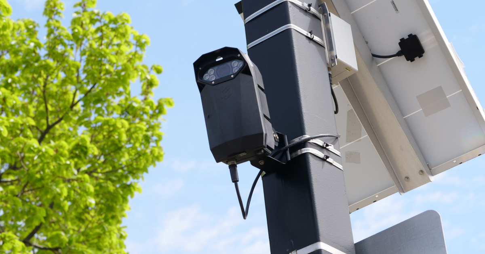
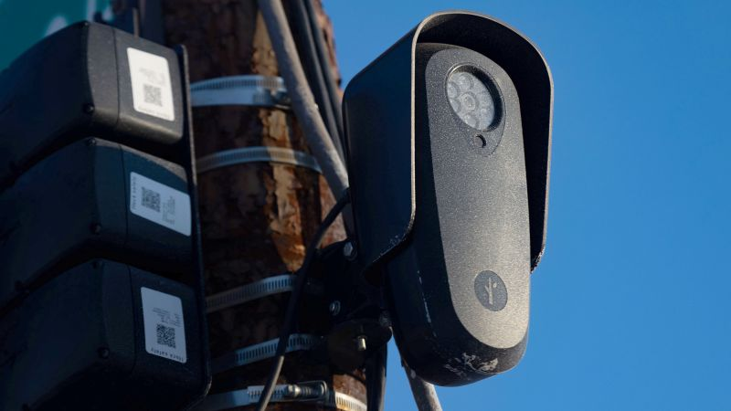
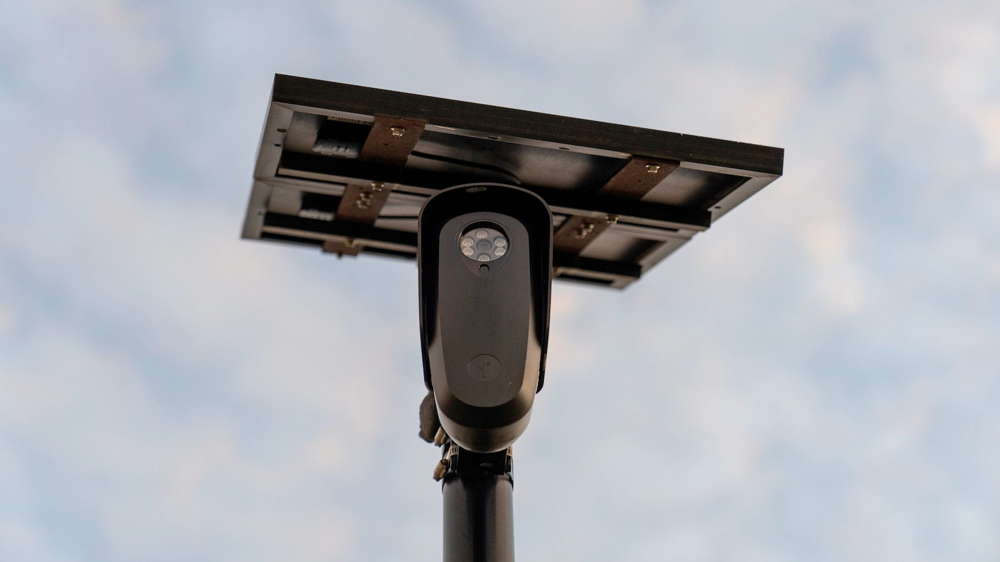
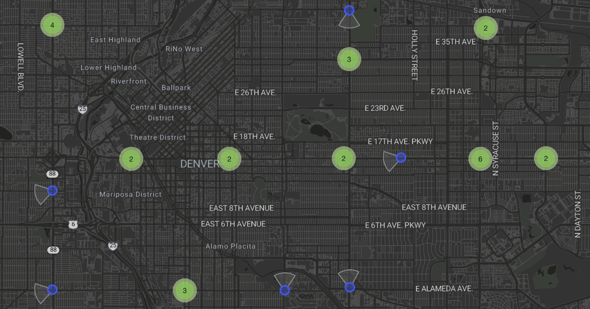
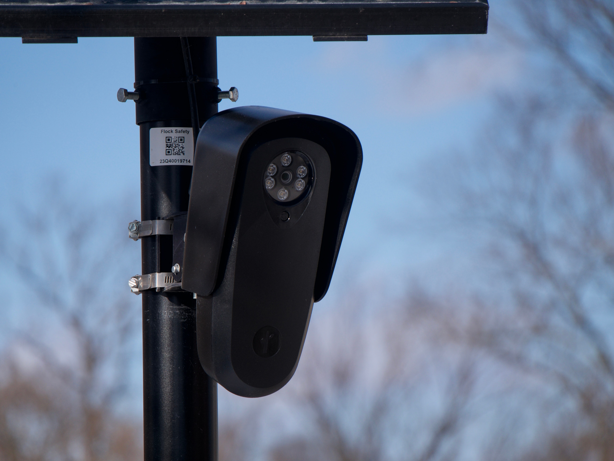
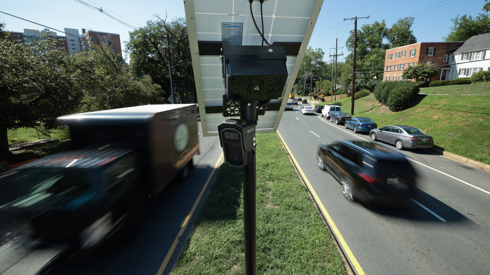

← Back to front pageSURVEILLANCECamera Abuse
11 digest(s) · newest first
The Flock Safety backlash is the most consequential domestic surveillance story of 2026 because it is collapsing on every front at once: cities are canceling contracts faster than the company can sell new ones, state legislatures are passing binding restrictions, and the FBI-level abuse catalog is now public. This is not a niche privacy debate — it is an infrastructure story about whether a private company can build a nationwide vehicle-tracking network that thousands of law enforcement agencies plug into, often without their own departments knowing federal immigration and military agencies are running searches through it.
The throughline that connects every headline is simple: the technology was sold as a crime-solving force multiplier, and what the public is actually getting is a stalking tool with a network effect. The worst documented cases are officers using the database to track ex-partners thousands of times, but the larger structural danger is that once this data exists and is shared across jurisdictions, it gets used for purposes nobody at the city council meeting voted on — ICE access in Evanston, federal searches without local consent, abortion investigations re-categorized as missing persons cases. The cameras are also being vandalized in at least 36 states, which is a rare and visceral public rejection of a police technology.
What to watch next: Flock's announced "case number required" guardrail is a company attempting to self-regulate after the damage is done. The real test is whether state laws like Washington's three-week data deletion requirement and Colorado's felony provisions for unlicensed 3D/CNC manufacturing of gun parts set a pattern other states copy, or whether the company pivots to selling to federal agencies and private security as the municipal market shrinks.

 ▶Watch the video on YouTube
▶Watch the video on YouTube ▶Watch the video on YouTube
▶Watch the video on YouTubeDate saved: 2026-10-22 03:00 (PDT)
Sources: ABC News, Politico, NPR, USA Today, GovTech, Chicago Tribune, Central Florida Public Media, Pittsburgh Post-Gazette, ACLU, Institute for Justice
Key findings
Mass contract cancellations and state pushback
- ABC News (Sep 1, 2026): More than 50 cities and counties have canceled or deactivated Flock ALPR cameras this year alone, Politico found, with pushback spanning red and blue states from Boston to Flagstaff to Santa Clara. (Source)
- GovTech (2026): Between August 2021 and May 2026, 82 Flock contracts were terminated in 28 states, according to San Francisco Standard reporting. A new Washington state law limits Flock data use to felony investigations and requires most data to be deleted within three weeks, banning sharing outside of court. (Source)
- Central Florida Public Media (Sep 1, 2026): The Florida Department of Transportation revoked permits for license plate readers on state right-of-ways, citing "concerning reports of misuse, data privacy concerns, and surveillance schemes." The Oviedo City Council agreed to prematurely end its five-year Flock contract the same night. (Source)
- Jackson Clarion Ledger (Oct 16, 2026): Jackson Police Chief RaShall Brackney announced the department will not renew its Flock contract, citing privacy concerns. More than 20 police agencies have launched investigations, suspended or fired officers, or filed criminal charges for Flock misuse since USA Today reporting began. (Source)
Documented police abuse: stalking, harassment, wrongful arrests
- ABC News (Sep 1, 2026): A Kentucky police officer was arrested after allegedly using Flock cameras to track his ex-girlfriend more than 2,000 times. In Savannah, Georgia, six police department employees were fired in August over alleged Flock camera abuse. The Institute for Justice says it has identified more than 100 incidents of ALPR abuse, including stalking and wrongful stops. (Source)
- Pittsburgh Post-Gazette (Sep 7, 2026): The Washington Post found 50 instances of rogue officers abusing ALPR data, most frequently to stalk former romantic partners. Pennsylvania lawmakers announced plans to introduce legislation requiring officers to document reasons for accessing ALPR data; State Sen. Dan Laughlin announced plans to ban Flock cameras entirely in the state. (Source)
- Chicago Tribune (Aug 21, 2026): In neighboring Kenosha County, former Sheriff Deputy Frank McGrath was charged with misusing the Flock database in fall 2025 to track a coworker for "an unauthorized personal purpose." Flock announced it will require case numbers for law enforcement searches by the end of the year. (Source)
- NPR (Aug 21, 2026): Flock cameras have been vandalized in at least 36 states, including incidents where individuals sawed down devices and shot at them with guns, as public backlash intensified. (Source)
Federal agencies accessing local camera networks without consent
- Shawn Ryan Investigations (2026): A late 2025/2026 national story broke revealing that ICE, the Secret Service, and the Navy had been running searches through local Flock networks — sometimes without the knowledge or consent of the local police departments that own the cameras. Evanston, Illinois ordered its Flock cameras removed after discovering Customs and Border Protection accessed local plate data, a direct violation of Illinois state privacy law; Flock quietly reinstalled the cameras anyway after the city told them to take them down. (Source)
- InvestigateTV (Aug 15, 2026): An investigation across the country documented cases where officers are getting fired and even arrested for misusing the powerful Flock data, with oversight lagging far behind the technology's reach. (Source)
- Mak-Tube / Great Investigations (Aug 21, 2026): Milwaukee police officer Jozu Ayala searched the license plate number of someone he was dating over 200 times in a two-month period, and also searched for his partner's ex. Over a two-month period in 2025, a Milwaukee officer searched his dating partner's plate more than 200 times. (Source)
- ACLU of Wisconsin / David insight (2026): John McCray Jones, policy analyst with the ACLU of Wisconsin, explained that Flock told Congress roughly 75% of its law enforcement customers opt in to data sharing, and documented three cases in Wisconsin this year alone where law enforcement officers were arrested for using ALPRs to stalk a romantic interest — putting Wisconsin at about 20% of known nationwide cases. (Source)
Source links
The Flock Safety backlash is no longer a niche privacy complaint — it is a full-blown crisis of legitimacy for one of the fastest-growing surveillance vendors in America. What started as a pitch to homeowners associations has metastasized into a network of more than 120,000 cameras across 49 states, and the abuse stories are accumulating faster than the company can promise reforms. When a Kentucky officer is arrested for querying a database more than 2,000 times to track an ex-girlfriend, and six Savannah cops are fired in the same month for the same instinct, the problem stops being about individual bad actors and starts looking like a design flaw: a surveillance toolkit built for law enforcement that is trivially easy to turn into a stalking instrument.
The political response is now outpacing the company's PR. More than 50 cities and counties have canceled or deactivated Flock cameras this year alone, according to Politico. Florida's Department of Transportation revoked permits for license plate readers on state right-of-way. Washington State passed a law limiting Flock use to felony investigations. A Pennsylvania Republican is pushing to ban the cameras entirely. This is a rare issue where the coalition against the technology spans civil liberties progressives, libertarians at the Institute for Justice, and rural Republican lawmakers. That breadth is unusual, and it signals that the backlash has real staying power.
What to watch: Flock's new safeguards — case-number requirements, automatic abuse detection, seven-day default retention — are a response to the Washington Post's tally of 50+ officers accused, charged, or convicted of misusing ALPR systems. But the deeper issue is the data-sharing architecture. Federal immigration authorities, the Secret Service, and the Navy have been running searches through local Flock networks, sometimes without the knowledge of the departments that own the cameras. That layer of federal access, combined with a 30-day default retention window and no warrant requirement, makes Flock less a local policing tool and more a building block for a nationwide vehicle-tracking apparatus. Until that architecture is publicly accounted for, the cancellations will keep coming.

▶Watch the video on YouTube  ▶Watch the video on YouTube
▶Watch the video on YouTubeDate saved: 2026-10-21 18:00 (PDT)
Sources: ABC News, USA Today, CNN, Washington Post, Politico, Institute for Justice, GovTech, Savannah WJCL, Clarion Ledger, Central Florida Public, Pittsburgh Post-Gazette, Electronic Frontier Foundation
Key findings
Mass surveillance network under nationwide backlash
Flock Safety has grown into the largest license plate camera network in the country — more than 120,000 devices across 49 states — but its rapid expansion has triggered a 전국 pullback. More than 50 cities and counties have canceled or deactivated Flock cameras in 2026 alone, with terminations spanning red and blue states. Between August 2021 and May 2026, 82 Flock contracts were terminated in 28 states, according to the San Francisco Standard. The Institute for Justice, a libertarian public-interest law firm, has identified more than 100 incidents of ALPR abuse, including stalking, wrongful stops, and non-law-enforcement use. (Source)
Police officers arrested for stalking ex-partners via Flock
A police officer in Kentucky was arrested after authorities alleged he used Flock cameras to track his ex-girlfriend more than 2,000 times. In Savannah, Georgia, six police department employees were fired in August 2026 over alleged abuse of Flock cameras. A North Carolina police officer was arrested for allegedly using Flock to track her boyfriend's ex-wife. The Washington Post reported that at least 50 officers had been accused, charged, or convicted of using Flock's system and other license-plate readers to spy on unsuspecting people — in many cases stalking their girlfriends or former partners. More than 20 police agencies have launched investigations, suspended or fired officers, or filed criminal charges for misusing Flock. (Source)
Federal agencies accessing local Flock networks without department knowledge
A Shawn Ryan Show investigation reported that federal immigration authorities — ICE, the Secret Service, and the Navy — had been running searches through local Flock networks, sometimes without the knowledge or consent of the local police departments that own the cameras. In Evanston, Illinois, the city ordered its Flock cameras removed after discovering that U.S. Customs and Border Protection had access to local plate data, a direct violation of Illinois state privacy law. Flock quietly reinstalled the cameras anyway after the city told them to take them down. (Source)
Florida blocks Flock cameras from state right-of-way
The Florida Department of Transportation announced it would revoke permits for license plate readers on state right-of-way, citing "concerning reports of misuse, data privacy concerns, and surveillance schemes." The Oviedo City Council agreed to prematurely end its five-year contract with Flock Safety. The Sumter County Sheriff's Office shut down its Flock program after a detective was charged with improperly using it to track her husband's former romantic partner. (Source)
Jackson, Mississippi ends Flock contract
Jackson Police Chief RaShall Brackney announced on October 14, 2026, that the department would not renew its contract with Flock Safety, citing privacy concerns. Brackney told the city council that more than 50 officers nationwide have been charged for policy violations involving Flock license plate readers. Ward 4 Councilman Brian Grizzell said the issue is less about the manufacturer and more about "greasy officers" who abuse their power to stalk people. (Source)
Flock responds with new guardrails
Flock Safety announced new safeguards including requiring law enforcement to label every search with a criminal case number, instituting automatic review for abnormal search activity that triggers proactive lockouts, and introducing a seven-day data retention default instead of the previous 30-day default. The changes came after a Washington Post investigation documented at least 50 officers accused of abusing the system. (Source)
Wrongful arrests and algorithmic errors
Errors in Flock Safety's character recognition software have led to wrongful arrests nationwide, including the arrest and later release of a Sanford, Florida woman based on a Flock match. Civil rights groups have raised alarms about mass surveillance, AI bias, and inaccuracy. Flock cameras have been damaged, vandalized, or tampered with in at least 100 cities across 36 states. (Source)
EFF investigation reveals sloppy search practices
The Electronic Frontier Foundation obtained search logs through public records requests and reviewed hundreds of thousands of searches from 2023 into late 2025. Officers routinely typed nonsense into the case-number field — "LOL," "LMAO," "idk," "asdfga," "idiot," and one entry reading "robbery i don't remember the case number leave me alone." One search from Lake County, Indiana reached more than 19,000 cameras across 1,558 cities and towns. Flock responded by changing the reason field from a free-text box to a dropdown menu, which EFF described as a loss for transparency. (Source)
Source links
The Flock Safety backlash is no longer a niche privacy fight — it has become the most visible grassroots surveillance revolt in years, and it is cutting across the usual political lines. When more than 50 cities and counties cancel their contracts in a single year, when a Republican governor pauses state funding and a Democratic governor welcomes a ban bill, when the ACLU and libertarian Institute for Justice are telling the same story about officer abuse, you are looking at a consensus forming against a technology that was supposed to be a win-win for police and communities.
The throughline here is not just the cameras themselves but what they expose about the gap between the marketing and the reality. Flock sells a system that helps solve crimes and find missing people — and the company's own numbers (1 million investigations, 10,000 missing persons located in 2025) are real. But the same system that tracks a getaway car can track an ex-partner 2,000 times, and the default 30-day data retention (recently cut to 7 days after the backlash) means every driver's pattern of life — doctor visits, church, political meetings, where they sleep — is sitting in a database searchable by thousands of officers with no warrant requirement. The abuse cases are not a bug that can be patched with an audit tool; they are the predictable outcome of a system designed to make every vehicle movement permanently retrievable by anyone with a badge and a login.
What to watch next: the state legislation pipeline. Washington already limited Flock use to felony investigations. Pennsylvania lawmakers are pushing a ban. The question is whether this stays a patchwork of local cancellations and state restrictions, or whether it forces a federal conversation about warrant requirements and data-retention limits for ALPR networks. The FBIJobs.gov breach and broader cybersecurity news this month make the data-security dimension of these networks harder to ignore.

▶Watch the video on YouTube  ▶Watch the video on YouTube
▶Watch the video on YouTubeDate saved: 2026-10-21 03:00 (PDT)
Sources: ABC News, CNN, Politico, USA Today, Washington Post, ACLU, Institute for Justice, Georgia ABC affiliate WJCL, Florida Public Radio, Pittsburgh Post-Gazette, Jackson Clarion Ledger
Key findings
Mass cancellations and contract rejections
- More than 50 cities and counties have canceled or deactivated Flock Safety ALPR cameras so far in 2026, a nationwide backlash spanning red and blue states, according to Politico. (Source)
- Florida's Department of Transportation revoked permits for license plate readers on state right-of-way roads, citing "concerning reports of misuse, data privacy concerns, and surveillance schemes." (Source)
- Jackson, Mississippi Police Chief RaShall Brackney announced October 14 that the department will not renew its Flock contract, citing privacy concerns; more than 50 officers nationwide have been charged for policy violations involving Flock readers. (Source)
- Oviedo, Florida's city council agreed to prematurely end its five-year Flock contract citing privacy and security concerns; Sumter County Sheriff's Office shut down its Flock program after a detective was charged with improperly tracking her husband's former romantic partner. (Source)
Officer abuse cases mount
- A Kentucky police officer was arrested after allegedly using Flock cameras to track his ex-girlfriend more than 2,000 times. (Source)
- In Savannah, Georgia, six police department employees were fired in August over alleged abuse of Flock cameras. (Source)
- The Washington Post reported at least 50 officers have been accused, charged, or convicted of using Flock's system and other license-plate readers to spy on unsuspecting people — frequently stalking girlfriends or former partners — and confirmed more than a dozen additional cases after the investigation published. (Source)
- A North Carolina police officer was arrested for allegedly using Flock readers to track her boyfriend's ex-wife. (Source)
- Milwaukee officer Josue Ayala secretly used Flock 124 times to track his romantic partner and 55 times to track that partner's ex; the detective who investigated him, Tehrangi Chapman, was himself later arrested for misusing the system and installing a GPS device on a vehicle. (Source)
- The Institute for Justice has identified more than 100 incidents of ALPR abuse — stalking, wrongful stops, detentions, and non-law-enforcement use — across the country. (Source)
Company response and legislative action
- Flock Safety announced new safeguards including a requirement that officers label every search with a criminal case number, an automatic review for abnormal search activity triggering proactive lockouts, and a default seven-day data retention period reduced from 30 days. (Source)
- A Washington state law limits Flock reader use and data to felony investigations and immediate needs. (Source)
- Pennsylvania Sen. Dan Laughlin (R) announced plans to introduce legislation to ban Flock cameras and similar network-based ALPRs in the state, citing concerns of a "system of mass surveillance." (Source)
- Sen. Josh Hawley (R-MO) announced an investigation into Flock Safety, writing that "Americans do not surrender their privacy rights when they drive to work, drop their kids off at school, or go to church." (Source)
- More than 20 police agencies have launched investigations, suspended or fired officers, or filed criminal charges for misusing Flock after reporting by USA Today. (Source)
Source links
The Flock Safety story has moved well past a privacy-debate niche and into a full-blown legitimacy crisis for automated license plate reader (ALPR) networks across the country. What makes this moment different from earlier surveillance pushback is the combination of hard criminal cases — officers arrested for stalking ex-partners through the system — and concrete economic consequences, with more than 50 cities and counties canceling or deactivating Flock cameras in 2026 alone. When cops get arrested for using the same tool meant to catch criminals, the technology's political cover collapses.
The throughline connects three separate shocks: the Washington Post's reporting that at least 50 officers have been accused, charged, or convicted of misusing Flock and similar systems; the Institute for Justice's tally of more than 100 ALPR abuse incidents; and a growing wave of state-level legislative responses — Washington state passed a law limiting Flock use to felony investigations and requiring most data to be deleted within three weeks. The company's own response (shortening its data retention default from 30 days to seven, requiring case numbers on every search) looks like damage control, not structural reform.
What to watch next: whether more cities follow Jackson, Mississippi's police chief in refusing to renew contracts, and whether the Fourth Amendment lawsuits the Institute for Justice has filed against Flock start producing rulings that constrain how police can use the system without a warrant.

 ▶Watch the video on YouTube
▶Watch the video on YouTube ▶Watch the video on YouTube
▶Watch the video on YouTubeDate saved: 2026-10-20 23:15 (PDT)
Sources: ABC News, CNN, Government Technology, Atlanta Journal-Constitution, Institute for Justice, San Francisco Standard
Key findings
Nationwide contract cancellations accelerate
So far in 2026, more than 50 cities and counties have canceled or deactivated automated license plate recognition cameras of the Flock Safety type, according to Politico-reported data covered by ABC News. The pushback spans both red and blue states, from large cities to small counties. (ABC News)
Officers arrested for stalking via Flock
A Kentucky police officer was arrested after authorities alleged he used Flock cameras to track his ex-girlfriend more than 2,000 times. In Savannah, Georgia, six police department employees were fired in August over alleged Flock abuse. A detective in Georgia, Tehrangi Chapman, admitted to using Flock to track two people and to secretly installing a GPS device on one person's vehicle — he was arrested after having himself investigated another officer for Flock misuse. (CNN)
Jackson police chief ends Flock contract
Jackson, Mississippi Police Chief RaShall Brackney announced on October 14 that the department will not renew its contract with Flock Safety, citing privacy concerns. Brackney told the city council that more than 50 officers nationwide have been charged for policy violations involving Flock license plate readers. Councilman Brian Grizzell said the issue is less about the manufacturer and more about "greasy officers" using their power to stalk people. (Jackson Clarion Ledger)
Flock announces security changes after abuse reports
Flock Safety announced new guardrails including requiring law enforcement to label every search with a criminal case number, instituting automatic review for abnormal search activity that triggers proactive lockouts, and reducing the data retention default from 30 days to seven days. Cities can now choose what types of offenses other agencies can access through their cameras. The changes came after the Washington Post reported at least 50 officers had been accused, charged, or convicted of using Flock and other ALPRs to spy on unsuspecting people. (ABC News / GMA)
Institute for Justice counts 100+ abuse incidents
The Institute for Justice, a libertarian public-interest law firm that has filed lawsuits against Flock on Fourth Amendment grounds, says it has identified more than 100 incidents of ALPR abuse, including stalking, wrongful stops and detentions, and non-law enforcement use. Attorney Michael Soyfer said the underlying problem is police can use the system without a warrant or clear reason. (ABC News)
State laws starting to constrain Flock
A new Washington state law limits use of Flock readers and their data to felony investigations and other immediate needs, bans sharing Flock data outside of court, and requires most data to be deleted within three weeks. Between August 2021 and May 2026, 82 Flock contracts were terminated in 28 states, according to the San Francisco Standard. (Government Technology)
Source links
Three years ago a city council voting to drop license-plate cameras was a curiosity. This week it is becoming the default: San Diego looks likely to join Tempe, Cave Creek and Jackson in walking away, and DeFlock's count of cities that have cancelled, rejected or deactivated Flock contracts is now past 90 — while the Washington Post's tally of officers accused, charged or convicted of misusing ALPR data has passed 50.
The throughline is that the abuse was never a bug cities could train around. The same national database that let Texas deputies track a woman suspected of traveling for an abortion is the one Flock now proposes to police itself with an "Audit Assistance" feature — a fix pitched by the company that built the loophole. Senator Hawley opening an investigation into a network that maps much of the country's cars is the clearest sign yet that the politics have shifted: this is no longer a left-right fight about policing, it is a fight over whether a private company gets to index public movement.
What to watch: whether San Diego's council survives a mayoral veto, and whether Flock's competitors — now signing the cities Flock loses — keep the same data-sharing habits or actually compete on restraint.
Date saved: 2026-10-20 18:00 (PDT)
Sources: Times of San Diego, NPR, The Hill, USA Today, Jackson Clarion Ledger, ACLU, 404 Media, Washington Post, DeFlock
Key findings
City contract cancellations accelerate
- Times of San Diego (Oct 20, 2026): A San Diego City Council committee is set to consider a resolution to terminate the police department's use of automated license plate readers (ALPRs) citywide. Councilmember Henry Foster III's resolution calls for ending the contract with Flock Safety and deleting all stored data. The ACLU Foundation of San Diego filed a lawsuit on September 30 claiming the technology violates the California Constitution's right to privacy. A council majority now favors cancellation, though Mayor Todd Gloria could veto. (Source)
- The Hill (Oct 20, 2026): Two Phoenix suburbs — Tempe and Cave Creek, Arizona — became the latest municipalities to terminate their Flock Safety contracts, with Tempe canceling an $80,000 contract and Cave Creek completely removing the technology. More than 90 cities have made moves to cancel or reject Flock ALPRs, according to antisurveillance organization DeFlock. A Washington Post investigation in early August found more than 50 law enforcement officers accused, charged, or convicted of misusing ALPRs. Senator Josh Hawley (R-Mo.) launched an investigation into Flock's national surveillance network, citing a case where an officer searched his ex-girlfriend's plate 124 times. Flock announced new privacy and data retention policies including an "Audit Assistance" feature and "proactive lockout" for abnormal behavior. (Source)
- Jackson Clarion Ledger (Oct 16, 2026): Jackson, Mississippi Police Chief RaShall Brackney announced the department will not renew its Flock contract, citing privacy concerns. The contract, approved in September 2024, was set to last at least two years. More than 20 police agencies have launched investigations, suspended or fired officers, or filed criminal charges for misusing Flock, as reported by USA TODAY. Brackney acknowledged that more than 50 officers nationwide have been charged for policy violations involving Flock license plate readers. (Source)
Police stalking and surveillance misuse exposed
- NPR (Aug 22, 2026): Flock Safety faces major backlash nationwide as communities uncover deep privacy concerns. Police can search Flock's shared national database of license plate images — including vehicles outside their own jurisdiction. In Texas, deputies used Flock data to investigate a woman suspected of traveling to have an abortion. Police officers have been found to use the technology to stalk women. Flock allows customers to control information sharing, but data has been unknowingly shared with federal immigration agencies including ICE and CBP. About 100 cities have deactivated cameras, rejected deals, or cancelled contracts. Competitors like Axon are stepping in — Denver and Longmont, Colorado signed contracts with Flock alternatives. (Source)
- USA TODAY: Reporting triggered more than 20 police agency investigations after revealing officers conducted searches not tied to law enforcement investigations, including stalking and harassment. The Washington Post documented 50+ officers accused, charged, or convicted of ALPR misuse. (Source)
- ACLU: "Get The Flock Out" campaign highlights ICE and CBP using Flock to target immigrants without warrants; Kansas police used ALPRs to pursue a man who wrote a critical op-ed; a Colorado officer wrongfully accused a woman of theft and refused to review exonerating evidence. (Source)
Legislative and political response
- Senator Josh Hawley investigation: Hawley's letter to Flock CEO Garrett Langley cited specific abuse cases and demanded information on Flock's national surveillance network, naming "abuse and misuse of personal data."
- DeFlock database: Tracks that approximately 100 cities have deactivated, rejected, or cancelled Flock ALPR contracts.
- Flock policy changes (October 2026): New "Audit Assistance" feature flags abnormal search activity; "proactive lockout" automatically suspends user access pending administrator review; updated data retention policies amid growing lawsuits.
Source links

Date saved: 2026-10-20 10:04 (PDT)
Sources: Mississippi Clarion Ledger, Arizona Republic, The Arizona State Press, AZFamily, NPR, The Hill, Politico, ACLU, DeFlock
The point of a license-plate reader network was never that it photographs cars. It is that every car, everywhere, becomes searchable by any cop, anywhere, without a warrant. That is the product Flock Safety sells, and more than 100 cities have now decided they do not want to be inside it — deactivated, rejected or cancelled, per the DeFlock council-wins database that tracks these votes precisely because no police department publishes this information.
Two of those decisions landed in the same 48 hours. On Wednesday, October 14, Jackson, Mississippi Police Chief RaShall Brackney told a city council committee: "We are not renewing Flock." The next night, October 15, the Tempe, Arizona City Council voted 6–1 to write an outright ban on automated plate readers into city code — with penalties attached.
What the network actually does to people
Start with what is documented, not with what the officials say about it:
Nobody in that list was charged with anything. That is the technology working as designed.
"No misuse found" is not a finding — it's a department grading its own homework
Tempe's council deserves credit for the vote, and the honest reading of the record still matters: Mayor Corey Woods said monthly audits turned up zero misuse by Tempe officers, and the ban passed anyway. Councilmember Bobby Nichols was against the cameras as a citizen before he was on the council, and the ordinance passed over the objection of Police Chief Kenneth McCoy, who said losing access has made some investigations harder.
Notice what an internal audit can and cannot do. It cannot see the query an officer ran out of curiosity about a neighbour. It cannot see the plate of the ex-partner, the protester, the clinic. It cannot see the query an officer ran because a federal agent asked nicely over the phone. An audit finds what an institution is willing to find about itself — and Flock's own answer to the scandal was to build "Audit Assistance" and a "proactive lockout" that flags abnormal search patterns. The company can see everything its customers do with the product. That was always true. It took 50 charged officers for it to become a selling point.
Jackson's non-renewal keeps the tool and changes the logo
Chief Brackney told the committee plate readers can still be useful — while citing the 50-officer tally — and said the department will look at other systems "with stringent policies so we don't over surveil or over police." (Clarion Ledger) The city approved Flock in September 2024 for 16 readers citywide on a two-year term; the contract lapses, the cameras come down, and the capability presumably returns under a different vendor. Axon, Motorola Solutions and Verkada are already courting exactly these cities, and Axon's Rick Smith told investors agencies want "to convert from existing license plate readers to us."
That is the pattern worth naming: the cancellations are a market event, not a reckoning. More than 90 cities had moved by mid-August (The Hill), over 20 in July alone, on both sides of the aisle (Politico) — because everyone eventually realizes they are in the database too, and it only takes one bad breakup, one protest, one clinic visit to be queried by a stranger with a badge. The objection that only arrives when the machinery might point at you is still an objection; it just isn't solidarity.
Flock's CEO Garrett Langley says the company will have added seven times as many customers as it lost this year. He is probably right, and that is the most important sentence in this story.
A ban on city cameras is a floor, not a wall
Tempe's ordinance is the strongest version anyone has passed: it bans city agencies from buying, operating or querying the technology, requires existing data destroyed, and can cost a violating employee their job or worse. But read the coverage and the gaps are right there — Arizona State University runs its own 20 readers on and around campus, private businesses, apartment complexes and homeowners associations keep theirs, and the ordinance allows the city to receive data from other agencies in task forces and multi-jurisdictional cases. The EFF's warning from the same reporting stands: a national database means "suddenly your cameras are being used to enforce things that you don't agree with or that are not illegal in your town."
The city voted to stop watching its residents. The block has not stopped watching.
What readers can do:
- Look up your own city. DeFlock's database tracks which councils have cancelled, kept or expanded contracts — find yours before the next meeting.
- Ask your council for the audit, not the assurance. How many queries ran last month? Who can run them? Who audits the auditors? And is the data shared with ICE or with states that criminalize abortion and protest?
- Push for an ordinance, not a non-renewal. Contracts expire; data destruction requirements, query logs and penalties for abuse survive the next police chief.
- If your city just voted, send this piece to a local reporter. Local coverage of a council vote is what flips the next one.
Source links

Date saved: 2026-10-20 03:00 (PDT)
Sources: NPR, The Hill, USA TODAY/Clarion Ledger, ACLU, Politico, DeFlock, 404 Media
Key findings
Mass contract cancellations across the US
- NPR (August 22, 2026): Dozens of cities have canceled their contracts with Flock Safety, with about 100 cities having deactivated cameras, rejected deals, or cancelled contracts according to the DeFlock database. Some cities like Denver and Longmont, Colorado, have signed contracts with Flock competitor Axon instead. Flock CEO Garrett Langley claims the company will have added seven times the number of new customers that have left this year. (Source)
- The Hill (August 2026): Two Phoenix suburbs — Tempe and Cave Creek — became the latest municipalities to terminate their Flock contracts. Tempe had an $80,000 contract and said it would turn off all Flock cameras in response to mounting reports of data misuse. More than 90 cities have moved to cancel or reject Flock ALPRs as of mid-August. (Source)
- Jackson Clarion Ledger (October 16, 2026): Jackson, Mississippi Police Chief RaShall Brackney announced the department will not renew its Flock contract, citing privacy concerns. The contract was set to last at least two years from September 2024. Brackney said more than 50 officers nationwide have been charged for policy violations involving Flock license plate readers. (Source)
Police stalking and data misuse scandal
- USA TODAY / Washington Post investigation (August 2026): More than 50 law enforcement officers have been accused, charged with, or convicted of misusing ALPRs for unauthorized purposes — including stalking past partners without consent. One officer allegedly searched his ex-girlfriend's license plate 124 times. In Texas, deputies used Flock data to investigate a woman suspected of traveling to have an abortion. A mother and her children were held at gunpoint after ALPR cameras wrongly flagged their car as stolen. (Source)
- Senator Josh Hawley investigation (August 2026): The Missouri Republican launched an investigation into Flock's national surveillance network, citing multiple instances of "abuse and misuse of personal data." Flock responded with new privacy measures including an "Audit Assistance" feature to flag abnormal activity and a "proactive lockout" feature that automatically suspends access when user behavior meets a threshold for abnormal behavior. (Source)
Competitor opportunism and broader surveillance concerns
- NPR (August 2026): Competitors including Axon, Motorola Solutions, and Verkada are stepping in to fill the gap as Flock contracts are cancelled. Axon CEO Rick Smith told investors they are seeing "a significant number of agencies want to come over to Axon and convert from existing license plate readers to us." Privacy advocates warn competitors offer similar surveillance capabilities — the EFF notes the national database means "suddenly your cameras are being used to enforce things that you don't agree with or that are not illegal in your town." (Source)
- ACLU: ICE and CBP have repeatedly used Flock to go after immigrants without warrants. Kansas police used Flock to pursue a man who wrote a critical op-ed about the department. The ACLU campaign "Get The Flock Out" documents city after city backing out, including January 2026 (city council vote to end contract), August 2026 (Washington Terrace), and July 2026 (Stoughton, Wisconsin, voted unanimously to terminate). (Source)
- Politico (August 9, 2026): The backlash against Flock cameras is becoming bipartisan, with over 20 local jurisdictions moving to cancel in July alone. Residents have swarmed city council meetings in multiple states, raising concerns about tracking people traveling to places of worship, medical care centers, and political protests. Some Virginians worry ALPR data could be used to identify people traveling for abortions or shared with agencies enforcing abortion restrictions in other states. (Source)
Source links

Date saved: 2026-10-19 18:00 (PDT)
Sources: ABC News, CNN, GovTech, Jackson Clarion Ledger, Chicago Tribune
Key findings
Nationwide Backlash & Contract Cancellations
- ABC News (Oct 2026): More than 50 cities and counties have canceled or deactivated Flock Safety ALPR cameras in 2026, according to Politico, with pushback occurring across red and blue states alike. Privacy concerns have been stoked by instances of police officers tracking ex-partners, and wariness about AI's role in the technology has deepened public unease. (Source)
- GovTech (2026): Between August 2021 and May 2026, 82 Flock contracts were terminated in 28 states, per San Francisco Standard reporting. A new Washington state law now limits Flock reader use to felony investigations and immediate needs, bans sharing data outside of court, and requires most data to be deleted within three weeks. (Source)
- Jackson Clarion Ledger (Oct 16, 2026): Jackson Police Chief RaShall Brackney announced the department will not renew its Flock Safety contract, citing privacy concerns. More than 50 officers nationwide have been charged for policy violations involving Flock license plate readers. (Source)
Police Abuse & Stalking Cases
- CNN (Jul 26, 2026): Officer Josue Ayala secretly used Flock to learn the location of his romantic partner 124 times and that partner's ex 55 times. Another detective, Tehrangi Chapman, was arrested for misusing Flock to track two people and secretly installing a GPS device on one person's vehicle. At least two dozen cases exist in which officers resigned or were arrested for allegedly abusing Flock to stalk romantic interests, per the Institute for Justice. (Source)
- ABC News (Oct 2026): A Kentucky police officer was arrested after allegedly using Flock cameras to track his ex-girlfriend more than 2,000 times. In Savannah, Georgia, six police department employees were fired in August over alleged Flock camera abuse. The Institute for Justice has identified more than 100 incidents of ALPR abuse, including stalking and wrongful stops. (Source)
- Chicago Tribune (Aug 21, 2026): In Kenosha County, Wisconsin, former Sheriff Deputy Frank McGrath was charged with misusing the Flock database to track a coworker for an unauthorized personal purpose. Flock has announced it will require case numbers for law enforcement searches by the end of the year in response to public backlash. (Source)
Legal & Regulatory Response
- GovTech (2026): Washington state's new law represents one of the most aggressive state-level responses, restricting Flock data to felony investigations and mandating three-week data deletion. The Institute for Justice, a libertarian public interest law firm, has filed lawsuits against Flock on Fourth Amendment grounds, arguing police can use the system without a warrant or clear reason. (Source)
- Chicago Tribune (Aug 21, 2026): Illinois legislators are debating rules for license plate readers as resistance grows in Lake County, with opponents calling ALPRs a 'pure violation of our Fourth Amendment' and a 'slippery slope' invasion of privacy for innocent drivers. (Source)
Source links

Date saved: 2026-10-19 03:00 (PDT)
Sources: ACLU, The Hill, USA Today, NPR, Washington Post, GovTech, Clarion Ledger, DeFlock
Key findings
City contract cancellations surge
- The Hill (August 26, 2026): Two Phoenix suburbs — Tempe and Cave Creek, Arizona — became the latest municipalities to terminate their contracts with Flock Safety, canceling their use of automated license plate readers (ALPRs). Tempe had an $80,000 contract and cited mounting reports of data "misuse" in other regions; Cave Creek cited "several high-profile abuse cases reported locally and nationally, as well as a recent theft of a FLOCK camera." More than 90 cities, according to antisurveillance organization DeFlock, have made moves to cancel or reject Flock ALPRs. (Source)
- NPR (August 22, 2026): More than 130,000 automated license plate readers can be found in cities and towns across the country, according to the crowdsourced database DeFlock.org. About 100 cities have deactivated cameras, rejected deals, or cancelled contracts. Florida Gov. Ron DeSantis called the increasing use of ALPRs "out of control" during a press conference, saying "I don't want to have this become a surveillance state." (Source)
- GovTech: Between August 2021 and May 2026, 82 Flock contracts were terminated in 28 states, according to reporting by the San Francisco Standard — 39 of those between January and May 2026 alone. A new Washington state law now limits use of Flock readers and their data to felony investigations and other immediate needs. (Source)
Police stalking and abuse scandals
- ACLU (July 2, 2026): Flock Safety repeatedly lied to city councils, police departments, and the public. In Oshkosh, Wisconsin, the company told the city council its ALPR system did not create heat maps of vehicle movements — then admitted the next day that it did. The council voted to revoke its contract in one day, setting a record for the shortest time between approval and cancellation. The ACLU documented a pattern of Flock misleading officials about federal data sharing, immigration enforcement access, and privacy protections. The Institute for Justice has cataloged more than 200 incidents of ALPR abuse, including stalking, wrongful stops, and non-law enforcement use. Since the beginning of 2026, over 200 cities have terminated their contracts; in August, cities terminated contracts at a rate of more than three per day. (Source)
- USA Today / Washington Post (August 2026): A Washington Post investigation found more than 50 law enforcement officers had been accused, charged with, or convicted of misusing ALPRs for unauthorized purposes — including stalking past partners without consent. More than 20 police agencies have launched investigations, suspended or fired officers, or filed criminal charges for misusing Flock after USA Today reporting. In one case, a police officer allegedly searched his ex-girlfriend's license plate number 124 times and her former boyfriend's plate 55 times. (Source)
Legislative and political responses
- Clarion Ledger (October 16, 2026): Jackson, Mississippi Police Chief RaShall Brackney announced the department would not renew its contract with Flock Safety, citing privacy concerns. The contract had been approved in September 2024 for 16 license-plate readers citywide. More than 50 officers nationwide have been charged for policy violations involving Flock readers. (Source)
- The Hill (August 26, 2026): Sen. Josh Hawley (R-Mo.) launched an investigation into Flock's national surveillance network, naming multiple instances of "abuse and misuse of personal data." Flock announced new privacy and data retention policies including an "Audit Assistance" feature and a "proactive lockout" feature that automatically suspends access if a user's activity meets a threshold for abnormal behavior. (Source)
Source links

 ▶Watch the video on YouTube
▶Watch the video on YouTube ▶Watch the video on YouTube
▶Watch the video on YouTubeDate saved: 2026-10-18 18:00 (PDT)
Sources: The Detroit News, Mississippi Clarion Ledger, ABC News, The Hill, NPR, Politico, USA TODAY
Key findings
City contract cancellations mount
- The Detroit News (Oct 12, 2026): Madison Heights, Michigan, became the latest Metro Detroit community to sever ties with Flock Safety, announcing on Oct. 11 that it would disconnect its three ALPR cameras and not renew its contract when it expires in November 2028. The city said Flock was unable to assure officials that "appropriate guardrails" were in place. Ten communities across Metro Detroit have now canceled Flock contracts in the last six months. (Source)
- Mississippi Clarion Ledger (Oct 16, 2026): Jackson Police Chief RaShall Brackney announced the department will not renew its Flock contract, citing privacy concerns. Brackney noted that more than 50 officers nationwide have been charged for policy violations involving Flock license plate readers and said JPD will look at alternative ALPR systems with "stringent policies so we don't over surveil or over police." (Source)
- ABC News (Sep 1, 2026): More than 50 cities and counties have canceled or deactivated ALPR cameras in 2026, Politico found. Florida's state transportation office revoked local law enforcement's ability to put license plate readers on state highways. Flock cameras have been vandalized in at least 36 states. The ACLU called it "the biggest, most grassroots privacy backlash that I've ever seen in more than 20 years working on these issues." (Source)
- The Hill (Aug 2026): Tempe, Arizona, terminated its $80,000 Flock contract and Cave Creek followed hours later. More than 90 cities have moved to cancel or reject Flock ALPRs. Flock announced new privacy safeguards including an "Audit Assistance" feature and a "proactive lockout" feature that automatically suspends access for abnormal user behavior. (Source)
Police abuse and stalking scandals
- ABC News (Sep 1, 2026): A Kentucky police officer was arrested after allegedly using Flock cameras to track his ex-girlfriend more than 2,000 times. In Savannah, Georgia, six police department employees were fired in August over alleged abuse of Flock cameras. The Institute for Justice has identified more than 100 incidents of ALPR abuse, including stalking and wrongful stops. (Source)
- NPR (Aug 22, 2026): The FBI investigated a case where a police officer searched his ex-girlfriend's license plate number 124 times and her former boyfriend's plate 55 times. NPR found that deputies in Texas used Flock data to investigate a woman suspected of traveling to have an abortion. More than 130,000 ALPR cameras are in cities and towns across the country, according to DeFlock.org. (Source)
Political and legislative response
- The Hill (Aug 2026): Sen. Josh Hawley (R-Mo.) launched an investigation into Flock's national surveillance network, citing "abuse and misuse of personal data." Florida Gov. Ron DeSantis called the increasing use of ALPRs "out of control." The Washington Post investigation found more than 50 law enforcement officers accused, charged with, or convicted of misusing ALPRs for unauthorized purposes. (Source)
- USA TODAY (Aug 2026): Flock Safety acknowledged that officers conducted searches not tied to law enforcement investigations, including stalking and harassment. More than 20 police agencies have launched investigations, suspended or fired officers, or filed criminal charges for misusing Flock. The company changed its privacy and data retention policies, reducing default retention from 30 to 7 days. (Source)
Source links

Date saved: 2026-10-18 14:33 (PDT)
Sources: CNN, USA TODAY, ABC News, NPR, AJC, The Conversation, 404 Media
Key findings
Police misuse of Flock ALPR systems
- USA TODAY (2026-08-28): Analysis of 75 million Flock searches across 3.5 years and 6,300+ agencies found hundreds of cases of officers searching single plates hundreds/thousands of times with vague justifications ("SUS", "TRAFFIC", "TEST", single letters). At least 19 police/sheriff employees in five states arrested, fired, or placed under investigation over a two-month span. (Source)
- CNN (2026-07-26): Milwaukee officer Josue Ayala secretly used Flock to locate his romantic partner 124 times and the partner's ex 55 times; the detective who investigated him (Tehrangi Chapman) was later arrested for misusing the system himself. Institute for Justice tallied 2+ dozen cases of officers resigning or arrested for allegedly abusing Flock to stalk romantic interests. (Source)
- ABC News: A Kentucky officer arrested for allegedly tracking his ex-girlfriend 2,000+ times; six Savannah, GA police employees fired in August 2026; a North Carolina officer arrested for tracking a boyfriend's ex-wife. (Source)
- AJC (2026-08): Flock's self-audit tool ("audit assistance tool," alerts on abnormal searches) has itself triggered internal investigations and criminal charges — e.g., former Polk County officer Tracey Royston (4 misdemeanor charges), DeKalb County suspended eight employees, a Conyers dispatch supervisor arrested for 30+ non-law-enforcement accesses. (Source)
- The Conversation: Washington Post investigation identified 50+ officers accused of misusing ALPRs (26 to spy on current/former partners), later updated to 100+ employees charged/accused. Braselton Police Chief Michael Steffman allegedly searched an ex's plates ~600 times; arrested Nov 2025, found dead before trial. (Source)
Federal / immigration angle
- 2025: U.S. Customs and Border Protection accessed 80,000+ cameras during an undisclosed nationwide vehicle-tracking pilot — including one police department's cameras without its knowledge.
- Public records from Danville, Illinois showed 4,000+ searches by federal agencies with potential immigration-enforcement focus, though ICE had no Flock contract.
- 2026 study found 11,935 immigration-related searches in partial records from eight college police departments.
- May 2025: A Texas sheriff's office searched 83,000+ cameras for a woman who had self-managed an abortion (per The Conversation/NPR). (Source)
Data capability concerns
- Wired / 404 Media (Sept 2026): Analyzed data hackers copied from one Flock camera — ~21 days of logs: 50,200 vehicles, 1.6 million images. Software detected people and bicycles, isolated an American flag patch on a saddlebag.
- 404 Media: "FreeForm" capability lets users search records by clothing, tattoos, or race — contradicting Flock's claim it only logs vehicles and doesn't do facial recognition.
Backlash / vandalism / cancellations
- NPR (2026-08-21): Flock cameras vandalized in at least 36 states (sawed down, shot at, paint, stickers, stolen, rammed). DeFlock counts 100+ cities deactivating or canceling contracts. (Source)
- ABC News: 50+ cities/counties canceled or deactivated ALPR cameras in 2026 (Politico tally). Cancellations include Fort Collins CO, Eugene OR, Madison WI, Knoxville TN, Syracuse NY, Walla Walla WA. (Source)
- Flock response: New safeguards announced — every search must be labeled with a criminal case number; automatic review of abnormal search activity with proactive lockouts.
Notable quotes / data points
- Gallup: 89% of Americans think government corruption is widespread (context item, see Trump file).
- Institute for Justice: 100+ incidents of ALPR abuse identified (stalking, wrongful stops, non-law-enforcement use).
Source links
// Get the brief by email
Twice-daily briefs — the same sourced reporting, in your inbox the moment it’s published. No ads, no trackers, one-click unsubscribe.
The email edition opens shortly — until then the RSS feed lands every brief the moment it’s published.
// Donate
If this brief is worth something to you, scan with your Zelle app.
Tap the code to open it full size.